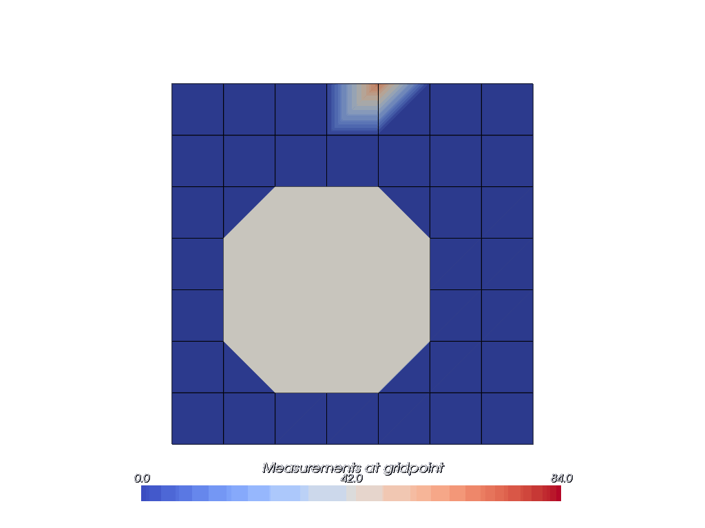

Flowfield Visualization#
qlbm uses vtk and Paraview for visualization. While we generally recommend Paraview for detailed analysis, the script below can parse vtk files and output gifs for a convenient alternative.
[1]:
from os import listdir
from os.path import isdir
import imageio
import numpy as np
import pyvista as pv
from PIL import Image, ImageDraw
from pyvista import themes
pv.set_plot_theme(themes.ParaViewTheme())
[2]:
# Function to create the animation
def create_animation(simdir, output_filename):
vti_files = sorted(
[f"{simdir}/{fname}" for fname in listdir(simdir) if fname.endswith(".vti")]
)
stl_mesh = pv.read(
[f"{simdir}/{fname}" for fname in listdir(simdir) if fname.endswith(".stl")]
)
# Find the global maximum scalar value
max_scalar = 0
for vti_file in vti_files:
mesh = pv.read(vti_file)
if mesh.active_scalars is not None:
max_scalar = max(max_scalar, mesh.active_scalars.max())
images = []
sargs = dict(
title="Measurements at gridpoint",
title_font_size=20,
label_font_size=16,
shadow=True,
n_labels=3,
italic=True,
fmt="%.1f",
font_family="arial",
position_x=0.2, # Centering the scalar bar
position_y=0.05,
)
images = []
for c, vti_file in enumerate(vti_files):
time_step_mesh = pv.read(vti_file)
plotter = pv.Plotter(off_screen=True)
plotter.add_mesh(
time_step_mesh,
clim=[0, max_scalar],
show_edges=True,
scalar_bar_args=sargs,
)
plotter.add_mesh(
stl_mesh,
show_scalar_bar=False,
)
plotter.view_xy()
img = plotter.screenshot(
transparent_background=True,
)
images.append(img)
# Clean up the plotter
plotter.close()
# Convert screenshot to PIL image
pil_img = Image.fromarray(img)
draw = ImageDraw.Draw(pil_img)
# Draw progress bar
bar_width = int(pil_img.width * 0.8)
bar_height = 20
bar_x = (pil_img.width - bar_width) // 2
bar_y = pil_img.height - 40
progress = int((c + 1) / (len(vti_files)) * bar_width)
draw.rectangle(
[bar_x, bar_y, bar_x + bar_width, bar_y + bar_height],
outline="black",
width=3,
)
draw.rectangle(
[bar_x, bar_y, bar_x + progress, bar_y + bar_height], fill="purple"
)
images.append(np.array(pil_img))
# Create the GIF from the collected images
imageio.mimsave(output_filename, images, duration=1, loop=0)
We ship the data below with the GitHub repository, but custom data can be generated using the scripts provided in the demos/simulation directory.
[3]:
# 2D CQLBM visualization with 7 obstacles and mixed boundary conditions
simdir = "sample-flowfield/collisionless-eight"
# Required for this to work on the website
if not isdir(simdir):
simdir = "../../../../demos/visualization/" + simdir
create_animation(f"{simdir}/paraview", "cqlbm_figure_eight.gif")
2025-11-24 16:01:33.798 ( 0.782s) [ 7FE440F2CB80]vtkXOpenGLRenderWindow.:1458 WARN| bad X server connection. DISPLAY=
For a better visualization experience, we recommend visualizing the results in Paraview.
[ ]:

[4]:
# 2D STQLBM visualization with a circle obstacle
simdir = "sample-flowfield/spacetime-d2q4-8x8-circle"
# Required for this to work on the website
if not isdir(simdir):
simdir = "../../../../demos/visualization/" + simdir
create_animation(f"{simdir}/paraview", "stqlbm_circle.gif")
